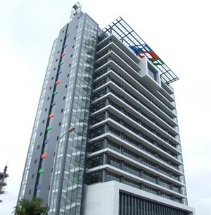

Giới thiệu chung
Vài nét về tập đoàn FPT
Tập đoàn FPT thành lập ngày 13/09/1988, hiện là tập đoàn công nghệ thông tin và viễn thông số 1 của
Việt Nam.
tập đoàn FPT hiện nay có tới 83 đơn vị thành viên với hàng trăm đơn vị kinh doanh và các bộ phận hỗ
trợ. Tập đoàn FPT có trụ sở tại 6 quốc gia:
Nhật, Mỹ, Pháp, Úc, Singapore và Malaysia. Năm 2008, bất chấp khủng hoảng tài chính, toàn tập đoàn
đã đạt doanh số hơn 1 tỷ USD,
trở thành doanh nghiệp tư nhân đầu tiên của Việt Nam đạt .doanh số hơn 1 tỷ USD,
trở thành doanh nghiệp tư nhân đầu tiên của Việt Nam đạt ngưỡng này. FPT hiện là đối tác của hơn 200
tập đoàn công nghệ lớn nhất trên toàn cầu. Bên cạnh đó, FPT cũng đang sở hữu trên 1.000 chứng chỉ
công nghệ cấp quốc tế của các đối tác công nghệ hàng đầu thế giới.

Đặc biệt, trong chuyến tháp tùng Chủ tịch nước Nguyễn Minh Triết sang Mỹ năm 2007, TGĐ Trương Gia
Bình và đoàn đại biểu FPT đã đạt được một bước ngoặt trong quan hệ đối tác chiến lược với Microsoft.
Theo đó, các Lập trình viên của FPT được tham gia viết các phần mềm cốt lõi của Microsoft cũng như
có được sự hỗ trợ của Microsoft trong việc xây dựng Đại học FPT trở thành “Ngôi trường của thế kỷ
21”.
Từ năm 1999, nhận thấy nhu cầu nguồn nhân lực chất lượng cao là yếu tố sống còn của việc
phát triển Tập đoàn và ngành công nghiệp công nghệ thông tin, FPT đã phối hợp với tập đoàn đào tạo
công nghệ thông tin hàng đầu thế giới Aptech Ấn Độ triển khai hệ thống các trung tâm đào tạo Lập
trình viên Quốc tế Aptech và Mỹ thuật đa phương tiện Arena tại Việt Nam. Qua 10 năm hoạt động, hệ
thống hiện đã có gần 40 trung tâm trên toàn quốc và đã đào tạo cho ngành công nghệ thông tin của
Việt Nam trên 20.000 chuyên gia phần mềm và mỹ thuật đa phương tiện.